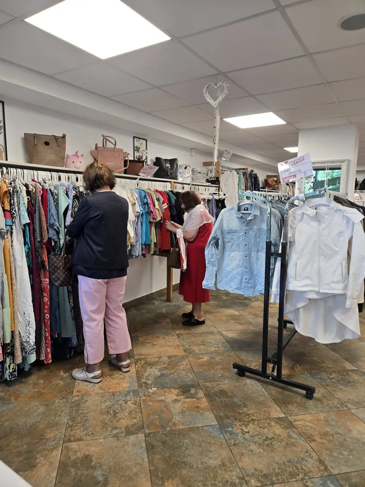
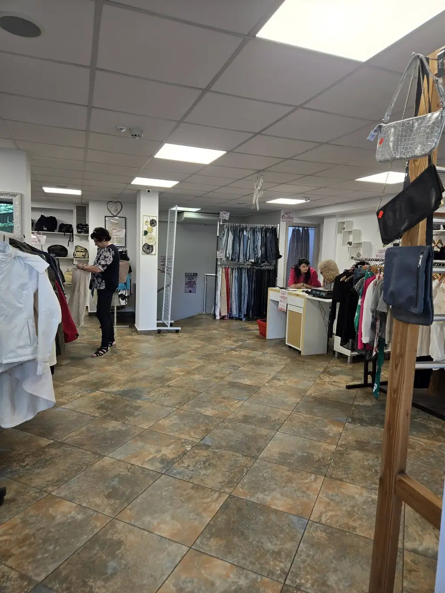

Re-Peat Лозенец – новият ни магазин

Добре дошли в новия магазин на Re-Peat в ж.к. Лозенец – на ул. Драгалевска 1, непосредствено до метростанция „Джеймс Баучер“.
На площ от около 200 кв.м., разпределени на два етажа, ви очаква голям избор от внимателно подбрани дрехи втора употреба, качествени находки и разнообразие за всеки стил.
Често зареждане и внимателен подбор
Зареждаме често, за да има какво ново да откривате при всяко посещение. Подбираме стоката с внимание към качеството и детайла, защото вярваме, че пазаруването на дрехи втора употреба може да бъде приятно, стилно и различно.


Повече пространство, повече находки
Re-Peat Лозенец – повече пространство, повече находки и още повече причини да ни посетите. Работно време: понеделник – събота, 10:00 – 18:00.